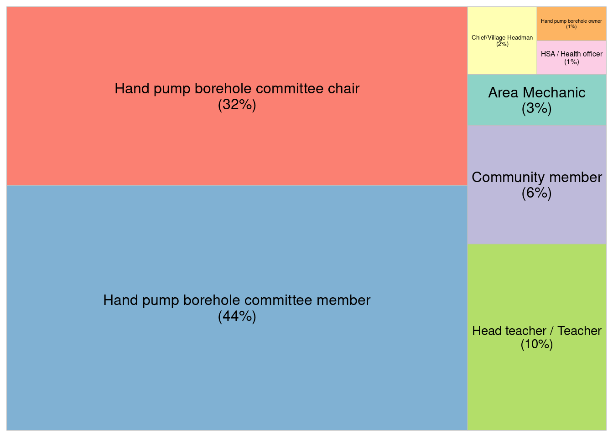
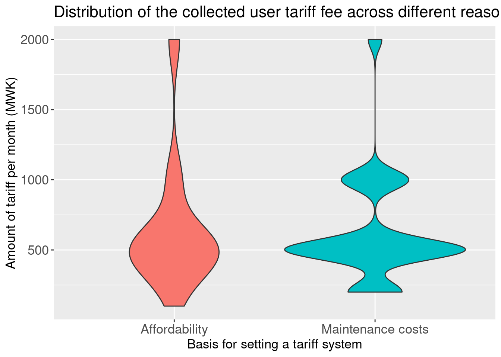

── Attaching core tidyverse packages ──────────────────────── tidyverse 2.0.0 ──
✔ dplyr 1.1.3 ✔ readr 2.1.4
✔ forcats 1.0.0 ✔ stringr 1.5.0
✔ ggplot2 3.4.4 ✔ tibble 3.2.1
✔ lubridate 1.9.3 ✔ tidyr 1.3.0
✔ purrr 1.0.2
── Conflicts ────────────────────────────────────────── tidyverse_conflicts() ──
✖ dplyr::filter() masks stats::filter()
✖ dplyr::lag() masks stats::lag()
ℹ Use the conflicted package (<http://conflicted.r-lib.org/>) to force all conflicts to become errors
Attaching package: 'janitor'
The following objects are masked from 'package:stats':
chisq.test, fisher.test
here() starts at /cloud/project
Thank you for using fastDummies!
To acknowledge our work, please cite the package:
Kaplan, J. & Schlegel, B. (2023). fastDummies: Fast Creation of Dummy (Binary) Columns and Rows from Categorical Variables. Version 1.7.1. URL: https://github.com/jacobkap/fastDummies, https://jacobkap.github.io/fastDummies/.
Attaching package: 'scales'
The following object is masked from 'package:purrr':
discard
The following object is masked from 'package:readr':
col_factorDeterminants of borehole’ functionality in Northen Malawi
Mabvuto Yesaya ![]()
Rows: 108 Columns: 24
── Column specification ────────────────────────────────────────────────────────
Delimiter: ","
chr (5): role, village_name, tariff_costs_consider, tarrif_frequency, dist...
dbl (18): id, bh_use_num, tariff_amount, total_money, tariff_hh_number, ava...
date (1): date
ℹ Use `spec()` to retrieve the full column specification for this data.
ℹ Specify the column types or set `show_col_types = FALSE` to quiet this message.Introduction
As the case with least developed countries in the global south, Malawi relies on Hand-pumped borehole water for drinking and serves more than 20% of the population (ref-grimason) . Studies have found that a significant number of boreholes in Malawi contain elevated levels of contaminants such as fluoride, nitrate, iron, and chlorides, which may exceed the safe limits for drinking water set by the World Health Organization (ref-chimpamba).
A study was done in TA Wasambo in Karonga district (Northern Malawi) in 2023 on handpump borehole functionality. Although the donor community keep funding these sources of water, (ref-ward) noted that there are issues with the sustainability of the projects. Therefore, the capstone project aims to explore factors that affect borehole sustainability.
Methods
The data were collected in Karonga district in TA Wasambo. Two (2) trained enumerators administered 20-minute questionnaires installed on koboTooolbox to collect the borehole functionality data from 300 respondents aged 18 and above. Questions included the borehole maintainance contributions from the community, the availability of borehole spare parts, and borehole management.
The study employed a stratified random sampling technique where 29 villages were purposively sampled based on the availability of boreholes. Then, households from each village were randomly sampled based on Probability Proportional to Size (PPS)1, where the sample sizes varied across clusters.
Objectives
To know the users of boreholes per village.
To check if there is a relationship between the costs that were considered before setting the tariff and the amount that is agreed to be paid as a tariff per month now
To check if the actual tariff collected per month, tariff collection frequency, distance to where borehole spare parts are, presence of a service provider, actual tariff collected and conducting preventive maintenance lead to the functionality of boreholes
Results
Respondents
Code
#treemap for waste composition with the percentages in brackets
borehole_data %>%
group_by(role) %>%
summarise(n = n()) |>
mutate(percent = scales::percent(n/sum(n), accuracy = 1.0)) %>%
ggplot(aes(area = n, fill = role, label = paste(role, "\n", "(", percent, ")", sep = ""))) +
geom_treemap(show.legend = FALSE) +
geom_treemap_text(colour = "black", place = "centre", size = 12,
aes(label = paste(role, "\n", "(", percent, ")", sep = ""))) +
labs(
fill = "Waste categories") +
theme(plot.title = element_text(hjust = 0.5),
plot.subtitle = element_text(hjust = 0.5),
plot.caption = element_text(hjust = 0.5)) +
scale_fill_brewer(palette = "Set3")
Code
#|code_folding: show
# a dataset for a plot
borehole_user <- borehole_data %>%
group_by(village_name) %>%
summarise(bh_use_num = sum(bh_use_num, na.rm = TRUE))Code
ggplot(borehole_user) +
geom_col(aes(
x = bh_use_num,
y = reorder(village_name, bh_use_num)
),
fill = unhcr_pal(n = 1, "pal_blue"),
width = 0.8
) +
geom_text(aes(
x = bh_use_num,
y = reorder(village_name, bh_use_num),
label = round(bh_use_num)
),
hjust = -0.5,
size = 8 / .pt
) +
labs(
title = "Number of households that use boreholes per village",
) +
scale_x_continuous(expand = expansion(c(0, 0.1))) +
theme_unhcr(
grid = FALSE,
axis = "y",
axis_title = FALSE,
axis_text = "y"
)
Code
scatter <- borehole_data %>%
filter(tariff_amount!=0 & total_money!=0) |>
select(tariff_costs_consider,tariff_amount)Code
#households vs amount
ggplot(scatter,aes(x=tariff_costs_consider, y=tariff_amount,fill=tariff_costs_consider))+
geom_violin()+
theme(legend.position = "None")+
labs(
title="Distribution of the collected user tariff fee across different reasons of setting them",
x="Basis for setting a tariff system",
y="Amount of tariff per month (MWK)"
)+
theme(plot.title = element_text(size = 16),
axis.title.x = element_text(size = 13),
axis.title.y = element_text(size = 13),
axis.text.x = element_text(size = 13),
axis.text.y = element_text(size = 13)) 
Code
library(stargazer)
Please cite as: Hlavac, Marek (2022). stargazer: Well-Formatted Regression and Summary Statistics Tables. R package version 5.2.3. https://CRAN.R-project.org/package=stargazer Code
#small dataset for ols
ols <- borehole_data |>
select(available_service_provider:tarrif_frequency_when_required_for_repairs)
mod=lm(bh_functional~ .,data = ols)
stargazer(mod,type = "text",report=("vc*p"),model.names = TRUE)
======================================================================
Dependent variable:
---------------------------
bh_functional
OLS
----------------------------------------------------------------------
available_service_provider 0.099
p = 0.430
preventive_mantainance 0.082
p = 0.278
distance_to_spareparts_20_km_away -0.495**
p = 0.011
distance_to_spareparts_0_20_km_away 0.003
p = 0.975
distance_to_spareparts_dont_know 0.623*
p = 0.091
distance_to_spareparts_within_community
tarrif_frequency_none -0.492***
p = 0.0001
tarrif_frequency_per_2_months -0.179*
p = 0.096
tarrif_frequency_per_month -0.361***
p = 0.004
tarrif_frequency_per_quarter 0.069
p = 0.527
tarrif_frequency_per_year 0.105
p = 0.338
tarrif_frequency_when_required_for_repairs
Constant 0.869***
p = 0.000
----------------------------------------------------------------------
Observations 108
R2 0.400
Adjusted R2 0.338
Residual Std. Error 0.340 (df = 97)
F Statistic 6.464*** (df = 10; 97)
======================================================================
Note: *p<0.1; **p<0.05; ***p<0.01Conclusions
References
Footnotes
A sampling method where the probability of selecting a unit from the population is directly proportional to its size or measure of importance↩︎